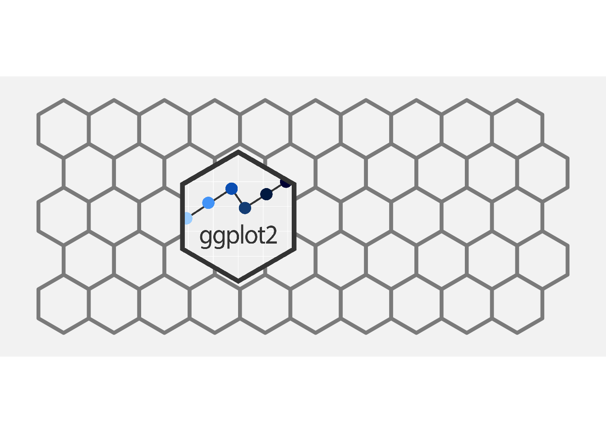
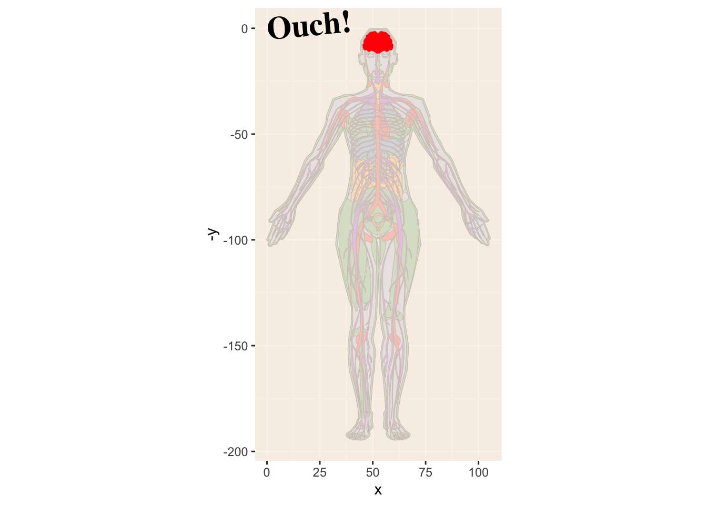

Why Everyday ggplot2 extension?
ggplot2 is notable in the data visualization space. Its elegance and flexibility as well as its track-record of being well-maintained makes it a attractive tool for researchers, business professionals, journalists, educators and the like.
ggplot2 lets users ‘write their plots into existence’. Users identify required plot components, name those elements, and ggplot2 produces the described plot. Code tends to be concise and intuitive, and it provides a faithful record of inputs and specification of a rendered plot.
Extending ggplot2 is a powerful way to enhance productivity and make plot coding more fluid and enjoyable. Given this, it’s surprising just how limited some quite useful extension mechanism are — even among seasoned ggplot2 users. The reason might because of the prevailing attitude that, ‘extending ggplot2 … is not for the faint-hearted’1 and that extension fairly inaccessible activity suitable for dedicated ‘devs’ with considerable time on their hands. This is unfortunate. We think this reality doesn’t need to persist and is resolvable with greater focused and sustained attention to educational resources for potential extenders.
‘everyday ggplot2 extension’ is born from the belief extension could be much more accessible and mainstream (2020-present). It’s goal is to provide education materials that will meet potential extenders where they and provide a community of support in extension endeavors. In short, this project seeks to support a new wave of extenders.2
Extension for mere mortals (everyday users)
‘Everyday’ is meant in the sense of ordinary – your ggplot2 extension doesn’t need to be flashy or complicated. And ‘ordinary’ ggplot2 users (who may be quite extraordinary in other domains) should be able to harness previously less accessed – but powerful – extension mechanisms.
‘Everyday’ is also meant in the sense of frequent. Practicing ggplot2 extension will probably make you better at extension - you’ll be in a position to write that next handy extension once when you have more experience under your belt. We’ve got some bite-sized exercises for you to build your know-how.
Furthermore, we model how to use extension mechanisms on the day-to-day. I.e. on-the-fly and in script use. (For those who are eventually interested in packaging, the project seeks to support best practice in that area as well - workshop to come).
Anticipating hurdles and learning through failure
By now, if you happen to know the book ‘The Design of Everyday Things’, you may be thinking our title evokes that work. That’s correct. An aim is to design new avenues for bringing people into ggplot2 extension.

And it’s to be expected that we’ll make poorly designed ggplot2 extensions along the way. And this is fine since mistakes can sometimes be more instructive and memorable than doing things ‘the right way’ the first time round. It’s hard to imagine Norman’s book selling as well without the ill-conceived tea kettle gracing the cover. In fact the ‘Norman door’ is one whose design makes door-use difficult. Expecting mistakes is another reason to make ggplot2 extension a less out-of-the-ordinary experience; past extensions feel less precious and we can part ways with them if appropriate. A deprecated package or abandoned function may have been of great service in getting you to a place that’s more elegant or efficient.
How do I know there’s an opportunity for extension?
The reason ggplot2 exists is explained by Hadley Wickham in an interview:
And, you know, I’d get a dataset. And, in my head I could very clearly kind of picture, I want to put this on the x-axis. Let’s put this on the y-axis, draw a line, put some points here, break it up by this variable. And then, like, getting that vision out of my head, and into reality, it’s just really, really hard. Just, like, felt harder than it should be… Where I just felt like … [should just be able] to say this is what I’m thinking, this is how I’m picturing this plot. Like you’re the computer ‘Go and do it’. - https://www.trifacta.com/podcast/tidy-data-with-hadley-wickham/
Born out of this frustration and knoweldge of Leland Wilkinson’s Grammar of Graphics, ggplot2 was built with its ‘logically decomposed bits’ to let you fly through plot creation with ease. You can go from the plot you’ve already pictured in your head into reality simply by describing it.
After a good amount of time using ggplot2, you get used to this flying sensation. You’ve practiced and mastered the grammar. You are a composer of ‘graphical poems’ — how the 2010 introductory paper on ggplot2 describes the code for the plot compositions. You confidently speak plots into existence. Poetry slam!

But then one day you may find yourself with a loss for graphical words within ggplot2. At some point ggplot2 will seem to fail to give you the fluid ggplot2 experience. One day you will find yourself saying, ’Why aren’t I flying?” This might be a moment to double-check your grammar prowess; or it might be a moment to turn to ggplot2 extension!
You may find what you need among existing extensions, checking the extensions gallery and the Awesome ggplot2 repository, you can’t find what you need to fly again, you might consider creating your own extension.
To summarize, here are some situations that indicate there might be a ggplot2 extension opportunity:
- I don’t feel like I’m flying; but usually I do
- My brain hurts because of the plot I’m trying to build; but usually it’s happy or
- ‘getting that vision out of my head, and into reality, it’s just really, really hard… harder than it should be.’
- my amygdala is activated when I think about making a certain plot

Tutorials
Cookbook
Community
Fine print
The focus at present has been Stat extension, though we hope to emphasize other areas.
We believe that Stat extension is sorely under-utilized. Providing education for this mechanism that could greatly enhance productivity as well as data storytelling with ggplot2.
Base ggplot2, of course, makes a lot of Stats available to users. Any time we use geom_histogram, geom_boxpot, geom_smooth, etc, mercifully much computation is happens under the hood for users. Compute is defined in ggproto objects like StatBin, StatBoxplot, StatSmooth which are used in these functions and computation is done automatically.
When users create new Stats via extension, they access ggplot2’s general capability as a computation engine. These users realize that off-loading a computational task to a ggplot2 extension function will save their future-selves or others from doing painstaking computational tasks as a prep step. Having designated Stats means that computation is enabled at the point-of-use: within the plot pipeline via a descriptive function (e.g. geom_point_means() could be defined to plot a point at the means of x and y), instead of requiring computation before starting to plot (and in this case the creation of a derivative dataset). And that scope of the Stat computation can be modified blazingly fast, via the addition of a group aesthetic or faceting declaration.
It may seem surprising, but creating new stats is one of the most useful ways to extend the capabilities of ggplot2. – ggplot2: Elegant Graphics for Data Analysis
But relatively few ggplot2 users have managed to harness the power of this very useful mechanism. The reason for this is likely that dedicated educational material is quite limited. The topic has been covered by extension mechanism authors in works like the ggplot2 extension vignette and in ggplot2: Elegant Graphics for Data Analysis, 3rd Edition, but because they are a small part of a much larger topic. In helpful and notable extend your ability to extend ggplot2 talk by Thomas Lin Pederson, it’s time that doesn’t allow for multiple examples which could help users to start recognizing and differentiating patterns for new Stat creation. I believe that more focused, sustained attention is required of educational materials that want to help ggplot2 users get into Stat creation.
Of particular concern is that barriers to entry and a lack of education is preventing people that could be be particularly prolific and efficacious from making contributions in ggplot2 extension. People with heavy teaching or analytic reporting loads, for example, might not think they have the time-resources to dedicate to figuring out Stat extension since educational materials have been relatively sparse. But extension by such people could be game-changing for their own teaching or analytic work – and could have further impacts should they share more broadly.
Educator, XXX, who recently attended the ggplot2 extenders meet-up and who is XXXX specializing in data visualization commented over email about her work with that uses ggplot2. Quoting her with permission:
““.
She further this general prevalence of this inelegance:
“”
This comment speaks to the need for greater education in ggplot2 extension mechanisms.
I have fleshed out a plan for doing this and preliminary work on this with emphasis on Stats creation. After hearing XXX reflections, I decided she might be interested in this new work. Her response, used with permission, is encouraging.
’’
Further development of these resources and broad dissemination is the goal of this proposal. By supporting this proposal, I think the XXX grant will help ggplot2 and in turn R shine even brighter!
Everyday ggplot2 extension read-along packages
- ggcalendar
- ggcirclepack
- [ggols]
- [ggsample]
- [ma206data]
- [ma206distributions]
- [ma206equations]
Spatial highlight
https://ivelasq.rbind.io/blog/leaidr2/ school district maps
I am told there are people that don’t care for maps, and I find it hard to believe. - Robert Louis Stevenson
[ggamericas] is an experiment in the geomSf-inheritance space, seeking to foster cross-package synergies, lessons learned, and emergence of best practices. The following packages are in the works and are proposed as early guides in this space:
- tidypivot
- ggcirclepack
In-script extension highlight
Beyond ‘Everyday ggplot2’
Any ‘everyday’ ggplot2 extender should also be aware of other learning resources (compiled by Teun van der Brand). These have been invaluable to crafting the ‘everyday ggplot2’ resources:
The extending ggplot2 vignette
The extending ggplot2 chapters of the ggplot2 book:
- Chapter 19: Programming with ggplot2
- Chapter 20: ggplot2 internals
- Chapter 21: Writing ggplot2 extensions
- Chapter 22: Case Study: Springs
The ggproto tag on StackOverflow
Extending your ability to extend ggplot2 by Thomas Lin Pederson at rstudio::conf 2020
Cracking open ggplot internals with {ggtrace} by June Choe at rstudio::conf 2022
Best practises for programming with ggplot2 by Dewey Dunnington at rstudio::conf 2020
Acknowledgements
I’m indebted to the ggplot2 extenders meet-up presenters and participants, that have provided a wealth of insight about extension experiences. Especially notably in willingness to have conversations about how to make extension more accessible is June Choe; he also has been very open to technical discussion and has played an especially large role in my own fluency in using delayed aesthetic evaluation. Teun van den Brand has also been helpful and open to discussion about about technical aspects of particular extension questions.
I’m grateful to the ASA Colorado-Wyoming Chapter membership for helpful feedback at the October 2023 meeting, after giving the talk: Supporting a new wave of ggplot2 extenders: New points of entry for ggplot2 super-users.
I’ve also grateful to colleagues at West Point Math Department for their feedback on my talk about creating and using new Stats objects: ‘Unlocking ggplot2 as a computational engine by extending ggplot2 statistical geometries’
Furthermore, I’ve gained feedback from participants evaluating a new tutorial to Stat extension, easy geom (Stat) recipes. A survey and focus group was used to hear their reactions. In brief, I found that the recruited ggplot2 super users (regular users with several years of experience), either hadn’t tried to enter the Stat extension space, or felt it was quite challenging. But there was a high success rates for new Stat creation using the new tutorial’s recipes model. Participant characteristics and tutorial evaluation can be found here. West Point Cadet Morgan Brown assisted in writing the tutorial.